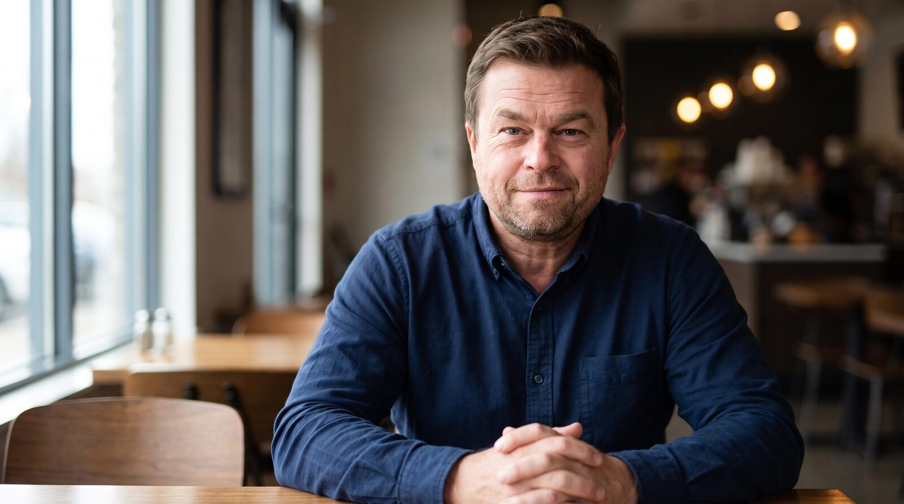

Hi, I’m Matt.
I’ve spent 25 years as a consumer bankruptcy attorney—representing thousands of people, teaching other lawyers, and seeing firsthand where the process works and where it gets in people’s way.
Now I’m working on what comes next.
I’m the founder and CEO of BK FastPass, where we’re building tools to make bankruptcy easier to understand, access, and practice. I still represent clients, so this work starts with the problems I see every day.
I speak and write about consumer bankruptcy, the people navigating it, and how technology could make the process work better.

- 25 yearsin consumer bankruptcy
- 5,000debtors represented
- Founder & CEOBK FastPass
Speaking and Media
Why I do this
I know what it feels like to be trapped by debt. In 2002, just out of law school, I filed my own bankruptcy. Bad decisions, bad luck, and bad timing had left me feeling despondent about my future. Bankruptcy gave me a way forward. That fresh start changed my life, and I decided to build my career around helping other people find theirs.
I committed early to consumer bankruptcy, focusing on Chapter 7 and Chapter 13. When the law changed dramatically in 2005, I dug into it and started teaching other attorneys. I liked the work because it solved real problems for people. Sometimes that meant filing a case. Sometimes it meant telling someone bankruptcy wasn’t the right answer. It always meant taking their situation seriously and giving them straight advice.
Over the years, I also saw what happened when people didn’t get that care. People who were already struggling would spend their last available dollars on a lawyer, trusting that they were buying a way forward, and receive inadequate representation. I began bringing cases against bankruptcy attorneys whose conduct harmed their clients. As other lawyers referred those cases to me, that work became a significant part of my practice.
Those experiences shaped a belief that drives me today: doing good work for clients should also be good for business. Attorneys who care about their craft should have the tools to serve more people well. People who need help should have an easier time finding and affording that representation.
That’s why I’m building BK FastPass. I see an opportunity to use modern software and AI to reduce the time, cost, and friction involved in consumer bankruptcy—to help good attorneys handle more cases without sacrificing the attention each client deserves, and to make quality legal help more affordable.
Bankruptcy gave me the chance to move forward. Helping more people get that same chance is still what this work is about.
Let’s talk.
Podcasts, interviews, media, legal tech, or just an interesting conversation about where consumer bankruptcy is headed.